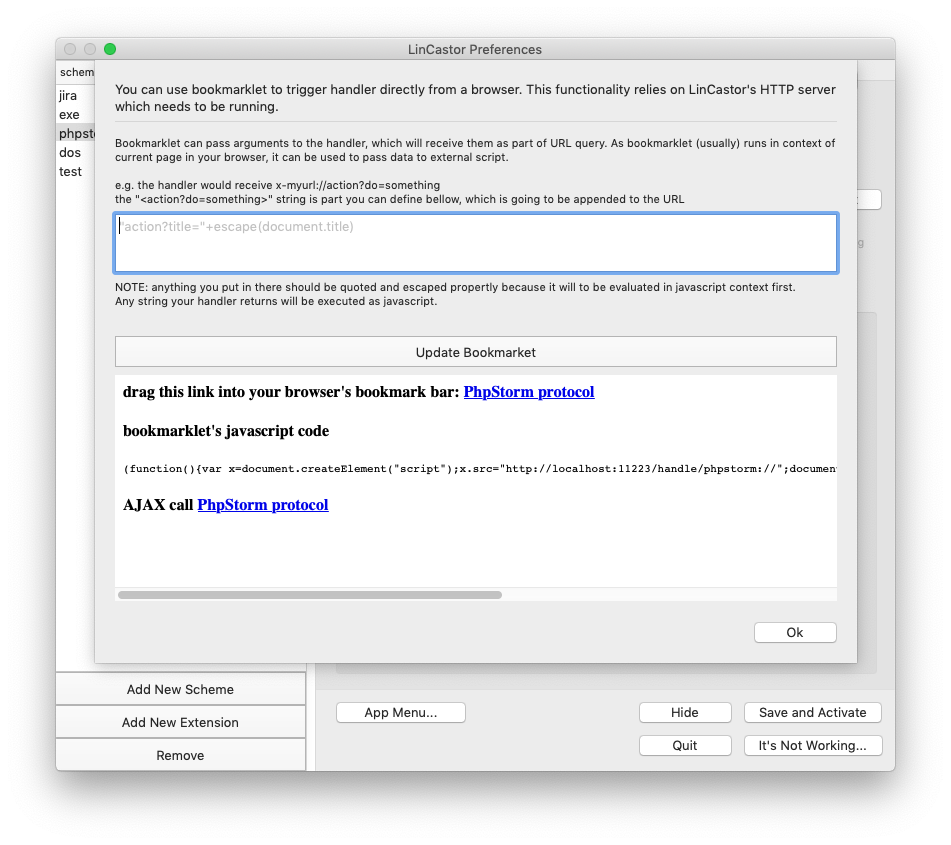

Callbacks
LinCastor Browser will handle certain URL in special way.
http-safari://, http-firefox://, http-chrome://
LinCastor Browser will forward this kind of url to the respective browser directly, bypassing any rule or configuration. For example, https-firefox://www.wikipedia.org will launch the link with Firefox browser.
lc://lookup
lookup text in LinCastor. This is the same as selectiong a text and invoking lookup using service menu or using dialog.
examples:
lc://lookup?text=hello
lc://open
open link in LinCastor Browser
lc://open?app_keywords=ref&url=https://www.wikipedia.org
lc://open/http://www.wikipedia.org
Alternative is to use http scheme. This is sometimes necessary for applications which will not recognize lc:// (e.g. MS Word or MS Excel).
http://lc.open/http://www.wikipedia.org
http://lc.open?url=http://www.wikipedia.org
Bookmarklets
Many browsers, including Chrome, Firefox and Safari support ability to create bookmarklets. Bookmarklets can invoke javascript functionality right within current page, which enables the bookmarklet to pass information to the LinCastor Browser.
For example:
javascript:function%20x()%7Bwindow.location='lc://open?url='+escape(document.URL);%7Dx();
will pass the current document URL to the LinCastor Browser.
TIP: to add bookmarklet to your browser
1 add bookmark
2 paste in the “javascript:...." stuff as link
Bookmarkets with LinCastor
LinCastor (the helper app) has ability to create bookmarklets, including the ones using custom URL schemes, using easy to use user interface.
